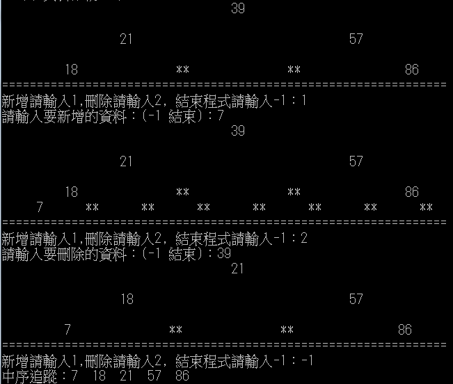

import java.util.*;
import java.io.*;
class Node{
int data;
Node l_child;
Node r_child;
Node( int d){
data = d;}
}
class Tree{
private Node root;
Tree(){
root = null;}
// ------------------
// 插入新節點
// ------------------
public void add(int data){
root = insertNode(root, data);}
private Node insertNode(Node current, int data){
if(current == null)
return new Node(data);
else if(current.data < data) //新插入的節點較大就往右
current.r_child = insertNode(current.r_child, data);
else //新插入的節點較小就往左
current.l_child = insertNode(current.l_child, data);
return current;}
// ------------------
// 刪除節點
// ------------------
public void deleteData(int data){
root = deleteNode(root, data);}
private Node deleteNode(Node node, int data){
if(node == null){
System.out.print(data + " Not in this tree.");
System.out.println();
return node;}
if(node.data < data)
node.r_child = deleteNode(node.r_child, data);
else if(node.data > data)
node.l_child = deleteNode(node.l_child, data);
else if (node.data == data){
if(node.r_child == null)
node = node.l_child;
else if(node.l_child == null)
node = node.r_child;
else{
int temp = findMin(node.l_child);
node.data = temp;
node.l_child = delMinOf(node.l_child);}
}
return node;
}
private int findMin(Node s_tree){
if(s_tree.r_child == null)
return s_tree.data;
else
return findMin(s_tree.r_child);}
private Node delMinOf(Node s_tree){
if(s_tree.r_child == null)
return s_tree.l_child;
else{
s_tree.r_child = delMinOf(s_tree.r_child);
return s_tree;}
}
// ------------------
// 進行中序追蹤
// ------------------
void inorder(){inorder(root);}
private void inorder(Node node){
if(node != null){
inorder(node.l_child);
System.out.print(node.data+" ");
inorder(node.r_child);}
}
public void displayTree(){
Node temp;
Stack nextLevel = new Stack(); //記錄下個階度的所有節點
Stack currentLevel = new Stack(); //記錄目前階度的所有節點
int blanks = 32;
boolean isLevelEmpty = false;
//開始顯示樹狀結構
currentLevel.push(root); //由root節點開始顯示
while(isLevelEmpty == false){
isLevelEmpty = true;
for(int j=0; j< blanks; j++) //印出blanks個空白
System.out.print(' ');
while(currentLevel.empty() == false){
temp = (Node)currentLevel.pop();
if(temp != null){
System.out.print(" "+temp.data);
nextLevel.push(temp.l_child);
nextLevel.push(temp.r_child);
if(temp.l_child != null || temp.r_child != null)
isLevelEmpty = false;}
else{
System.out.print("**");
nextLevel.push(null);
nextLevel.push(null);}
for(int j=0; j< blanks*2-2; j++)
System.out.print(' ');}
System.out.println();
blanks /= 2;
while(nextLevel.empty() == false) //如果下一階度還有節點,就將nextLevel的節點
currentLevel.push( nextLevel.pop() );} //放到currentLevel
}
}
class HW5_3{
public static void main(String [] args) throws IOException{
int [] d = {39, 57, 21, 18, 86};
Tree bt = new Tree();
int q = 0;
int x = 0;
String s, c;
for(int i: d)
bt.add(i);
bt.displayTree();
while(true){
System.out.println("================================================================");
System.out.print("新增請輸入1,刪除請輸入2, 結束程式請輸入-1：");
BufferedReader in = new BufferedReader(new InputStreamReader(System.in));
s = in.readLine();
q = Integer.parseInt(s);
if(q == -1) break;
if(q == 1){
System.out.print("請輸入要新增的資料：(-1 結束)：");
BufferedReader in1 = new BufferedReader(new InputStreamReader(System.in));
c = in.readLine();
x = Integer.parseInt(c);
if(x == -1) break;
bt.add(x);
bt.displayTree();}
if(q == 2){
System.out.print("請輸入要刪除的資料：(-1 結束)：");
BufferedReader in1 = new BufferedReader(new InputStreamReader(System.in));
c = in.readLine();
x = Integer.parseInt(c);
if(x == -1) break;
bt.deleteData(x);
bt.displayTree();}
}
System.out.print("中序追蹤：");
bt.inorder();
System.out.println();}
}